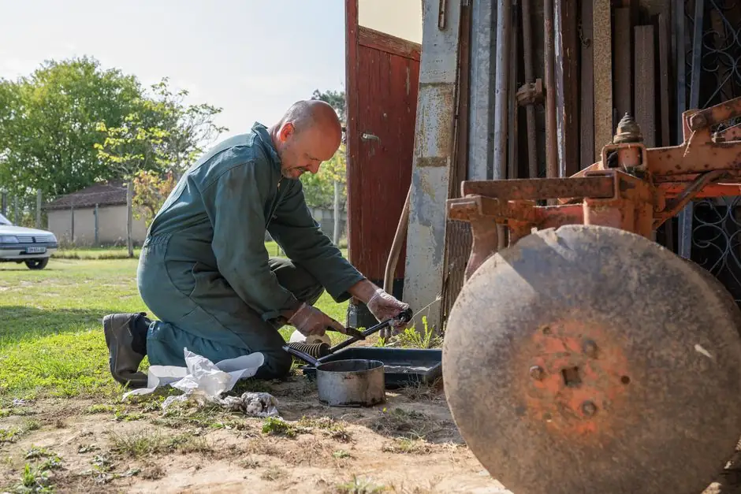

Hydro Jetting Naples, FL
When heavy grease, packed sand, thick mineral scale, or stubborn root clusters resist mechanical cabling, hydro jetting uses up to 4,000 PSI of water pressure to restore pipes to near-original capacity. We always perform a video pre-inspection to verify pipe integrity first.

When High-Pressure Water Jetting is the Superior Solution
Mechanical snakes are outstanding for puncturing localized clogs, but only high-velocity water washes away the sticky residue that lines pipe walls and attracts recurring blockages.
Commercial Kitchen Grease
In Naples restaurants and busy residential kitchens, cooling fats solidify into waxy coatings that narrow pipe diameters. Hydro jetting emulsifies fats and flushes them through interceptors.
Coastal Sand & Silt Removal
Naples pool deck drains, downspouts, and low-lying cleanouts collect fine beach sand that settles into heavy compacted silt. High-pressure jets stir and wash sand entirely out of the system.
Root Fiber Elimination
After mechanical blades cut the heavy core of ficus or palm roots, hydro jet nozzles sheer off remaining fibrous tendrils flush against the pipe wall, delaying root regrowth.
Why Hydro Jetting is Not Suitable for Every Pipe
We do not blindly promise that hydro jetting is appropriate for every plumbing line. Pipe condition dictates tool selection.
The Crucial Video Pre-Check: Because hydro jetting operates at 3,000 to 4,000 PSI, applying this hydraulic force to an already cracked, fractured, or rotted thin-wall cast-iron pipe can cause blowouts or sinkhole formation.
We always insert our self-leveling color camera first. If the pipe is intact, we calibrate the nozzle pressure to safely scour the walls. If the inspection reveals significant deterioration or structural joint collapse, we frankly advise against jetting and outline repair alternatives.
For lines that need basic clearing without water pressure, our mechanical drain snaking or sewer cleaning provides a gentle, proven alternative.

Calibrated To Pipe Material
The Hydro Jetting Service Process in Naples
Pre-Camera Scoping
We scope the line with high-definition video to confirm structural soundness and calculate the exact footage of the blockage.
Nozzle & Pressure Calibration
We select specialized nozzle configurations (penetrating, flushing, or rotating descaling) matched specifically to your pipe material.
Full-Length Scouring
The jetter hose self-propels downstream, cutting grease, sludge, and scale and pulling debris back toward the cleanout for extraction.
Post-Cleaning Inspection
We run the camera a second time, recording and showing you the clean, restored pipe walls before completing the visit.
The Science of 4,000 PSI Hydro Jetting Scouring
Hydro jetting is the gold standard for full-pipe restoration. While mechanical snaking only punches a hole through the center of an obstruction, hydro jetting utilizes calibrated water velocity to scrub the entire interior pipe circumference back to original hydraulic capacity.
Pressure vs. Volume Synergy (4,000 PSI @ 12 GPM)
True commercial jetting is not achieved with an electric pressure washer. It requires industrial water flow volume (Gallons Per Minute). Our truck-mounted pumps produce 3,500 to 4,000 PSI to fracture hard calcified scale and roots, while 12 GPM of high-velocity water physically washes heavy sand and debris completely out of the lateral.
Forward Penetration & Reverse Propulsion Nozzles
Our specialized nozzles feature one laser-focused forward jet to bore through solid grease caps, combined with six to eight rearward-angled 45-degree jets. These rear jets create a rocket-like propulsion effect that pulls the hose 150+ feet into the line while vacuum-pulling dislodged waste backward out of the cleanout.
Rotating Warthog Root-Cutting Heads
For aggressive subtropical ficus roots, we deploy rotary jetting heads containing controlled-speed viscous fluid governors. The water jets spin in a 360-degree helical pattern, acting like a high-speed liquid saw that cuts root rings completely flush with the pipe walls without scarring PVC.
Why We Always Camera-Scope Before High-Pressure Jetting
At Drain Cleaning Advisor, safety and pipe preservation come first. Introducing 4,000 PSI into a structurally compromised, crushed, or severely rotted cast-iron pipe can worsen existing fractures.
Our mandatory protocol requires running an HD SeeSnake camera down the line prior to starting jetting machinery. This allows us to verify pipe wall integrity, identify pipe material transitions (e.g. cast iron transitioning to PVC at the foundation line), and calibrate our pump pressure accordingly.
Can handle maximum operating pressures (3,500–4,000 PSI) for aggressive root shearing and culinary grease emulsification.
Jetting pressure is precisely moderated to 2,000–2,500 PSI to gently descale rust tubercles without disturbing aged joints.
Restaurant FOG Compliance & HOA Drainage Maintenance in Naples
Naples boasts world-class dining destinations along 5th Avenue South, 3rd Street South, and Mercato. Commercial restaurants generate thousands of gallons of Fats, Oils, and Grease (FOG) that solidify in underground lines between the kitchen grease interceptor and the municipal street connection.
Collier County enforces stringent FOG discharge regulations to prevent sanitary sewer overflows into Naples Bay and coastal estuaries. Our commercial jetting team establishes scheduled quarterly and bi-annual flushing agreements that keep restaurant lines 100% compliant and prevent catastrophic dinner rush backups.
- Grease trap inlet and outlet line scouring
- Condominium multi-story vertical kitchen stack descaling
- Commercial parking lot storm basin sand extraction
- HOA community mainline preventative root scouring
Hydro Jetting Service Highlights
Hydro Jetting FAQs
What is hydro jetting and how does it clean pipes?
Hydro jetting pumps high-velocity water (up to 4,000 PSI) through a heavy, flexible hose tipped with specialized nozzles. Rear-facing micro-jets propel the nozzle forward while simultaneously scouring grease, scale, sand, and root fibers completely off the 360-degree interior pipe circumference.
Why must a video camera inspection be conducted before hydro jetting?
Hydro jetting exerts immense hydraulic force. If a pipe is cracked, severely corroded, collapsed, or disconnected underground, high-pressure water can cause further structural damage or wash surrounding sub-base soil into the line. We inspect first to ensure the pipe is structurally sound for jetting.
Is hydro jetting safe for older Naples cast-iron or clay pipes?
It depends strictly on the pipe's internal wall integrity. In structurally sound cast iron, specialized rotating descaling nozzles safely remove rust tubercles. In heavily brittle, corroded, or thin-wall pipes, we advise gentler mechanical cabling instead.
How does hydro jetting help with coastal sand in Naples drain lines?
Collier County homes frequently accumulate fine silica and shell sand in patio, lanai, and exterior ground cleanouts. Mechanical cables only stir sand, whereas hydro jetting fluidizes and washes dense sand entirely out to the municipal collection main.
How often should commercial restaurants in Naples hydro jet grease lines?
High-volume commercial kitchens in areas like 5th Avenue South or Mercato generally schedule preventative hydro jetting every 3 to 6 months to stay compliant with local plumbing codes and prevent unexpected dining-hour backups.
What factors influence hydro jetting service cost?
Pricing depends on the total linear footage of the line, cleanout access size, the severity of grease or mineral scale encrustation, and whether root cutting or subsequent camera recording documentation is needed.
Why is hydro jetting superior to mechanical snaking for commercial kitchens in Naples?
Commercial restaurants along 5th Avenue South and Mercato process high volumes of cooking oils, butter, and animal fats. When these culinary lipids enter underground laterals, they cool and solidify into rock-hard grease layers. A mechanical snake cable only drills a 2-inch hole through a 4-inch grease plug, leaving the surrounding grease walls intact to catch food particles again within days. Hydro jetting uses 4,000 PSI water heated by fluid friction to emulsify grease and wash it completely out of the lateral into the municipal sewer, providing months of clog-free commercial operation.
How does hydro jetting remove coastal shell sand from Naples pool deck and patio drains?
Southwest Florida coastal storms frequently blow fine shell sand and lawn mulch into pool deck drains, patio trench drains, and decorative catch basins. Because sand is heavy, mechanical snakes simply pass through it without removing the sediment. Our hydro jetters utilize specialized sand-flushing nozzles with steep rear-facing thrust angles. The 12-GPM water volume creates a laminar fluid wave that liquefies the settled sand bed and vacuums it out of horizontal underground pipe runs.